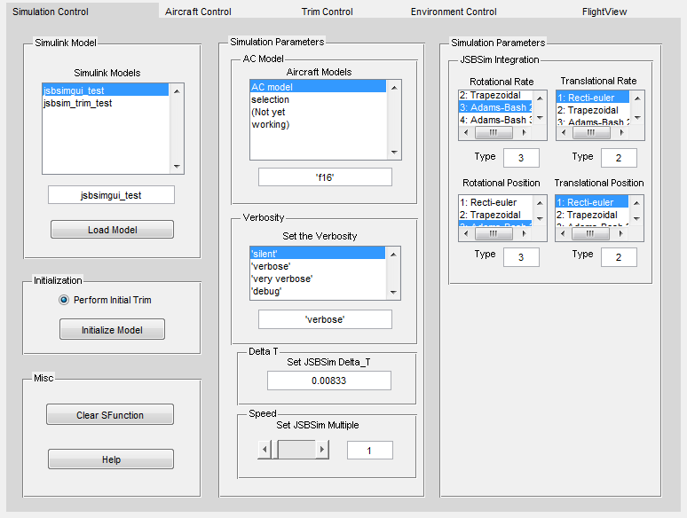
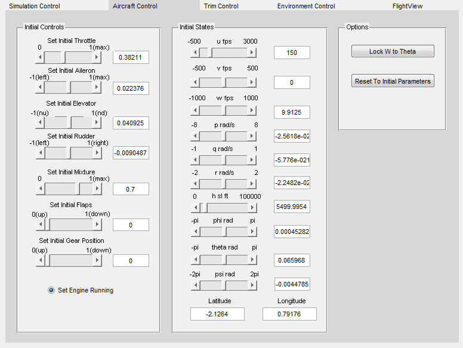
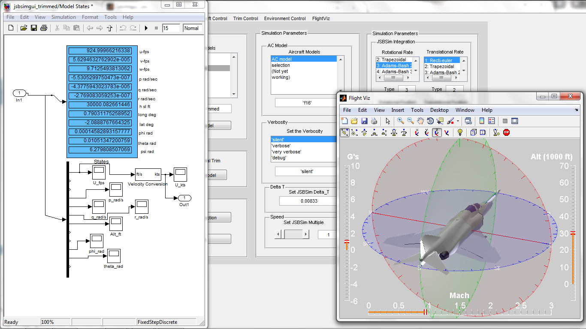
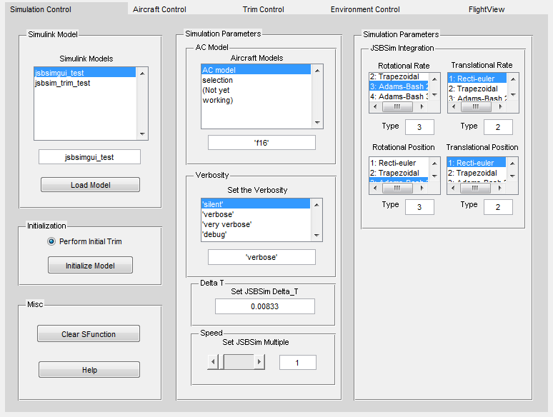
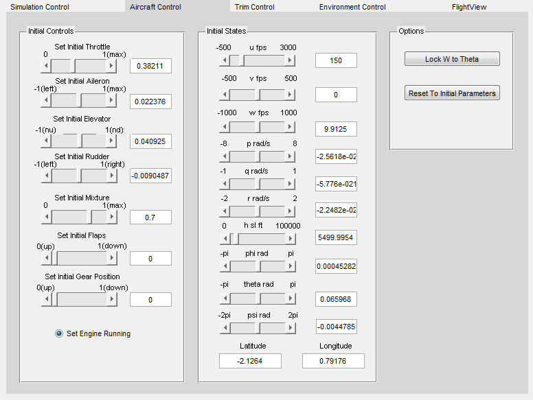
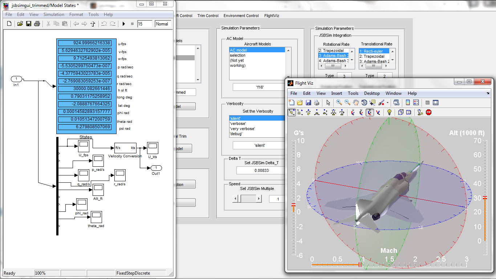

JSBSim S-function Project
Download the S-Function project here (click here). NOTE: The current version of the S-Function project includes the latest official release candidate of JSBSim, and it is not compatible with the current version of JSBSim in CVS. We are working on fixing that.
Background Work on integrating JSBSim with MATLAB began with Agostino De Marco's JSBSim_MATLAB project. By compiling JSBSim into a binary MEX file, Agostino's JSBSimMex file made JSBSim aircraft model properties accessible from the MATLAB command line. In MATLAB, a compiled binary MEX file is treated just like any other MATLAB function, which can be a very powerful way to bring existing C++ or FORTRAN code into the MATLAB environment. Agostino's project and resulting interface functions serve as the basis for the S-Function project that follows. Work on the JSBSim S-function project began in 2009 and has resulted in a version of JSBSim that is treated as a Simulink function block, allowing the user a rather convenient way to control a JSBSim simulation from within the Simulink environment. This allows for easy integration of JSBSim into any number of autopilot, flight control design, or flight model design and analysis projects designed in Simulink. Like the JSBSimMEX file, the JSBSim S-function is another example of a MATLAB binary MEX file, however it differs in that it has specific syntax to interface with the Simulink engine. Currently the S-Function project is still under development, but is being used by a variety of researchers, aerospace companies and hobbyists. The latest additions include a 3-d visualization tool, a multi-pane, tabbed user interface, and trim and linearization capability. The trim and linearization scripting is a modified version of a script written by Marius Niculescu of U-Dynamics for the development of UAV autopilot systems. The S-functions The JSBSim S-function project is actually made up of two different S-function MEX files- JSBSim_Sfunction.mex and JSBSim_Sfunction_trim.mex. JSBSim_S-function is intended to be used to do the bulk of model simulation in Simulink. It uses JSBSim's integrators to perform all vehicle state calculations and simply brings the resulting state, control and other data out to the Simulink/MATLAB workspace. It is typically run with the discrete time solver as all states are discrete. However, in the case that a Simulink model is built using the JSBSim S-Function and that uses blocks that contain continuous time states then a continuous time Simulink solver can be used. JSBSim_Sfunction_trim differs from the JSBSim_Sfunction in that it uses continuous states that are computed using Simulinks solvers, where in JSBSim_Sfunction, the states are calculated by JSBSim and are considered discrete. A separate trim S-Function is necessary because the trim function in Simulink needs access to the derivatives in order to calculate an operating point. GUI Control The S-function is controlled via the graphical user interface, instead of the default Simulink block parameters or S-function mask box as is typically used. This is necessary because of the large number of input parameters for both the aircraft model and for JSBSim simulation that would otherwise need to be entered in vector form in the block parameters box. This proved to be awkward and mistake prone, so a GUI was designed that allows the user a fairly powerful and extensive control interface into JSBSim. The multi-pane GUI allows the user full control of simulation delta T, JSBSim solver types, verbosity settings, aircraft states and trimming utilities as well as planned capabilities for environment variable control.


 Current State of Trim Capability A reliable trimming capability is highly desirable so that linearized, decoupled state space matrices can be extracted for the purpose of linear controller design and flight model analysis. However, in the current state of the project, the trimming capability is still not fully matured and will require further improvement. One major shortcoming of the current approach is that by default JSBSim uses different integration schemes for rotational and linear motion while Simulink can only specify one integration scheme for both types of motion. The result is that during simulation runs the differences between JSBSimGUI calculated states and JSBSimTrim calculated states will grow over time and the trim solution (for JSBSimGUI) becomes less accurate. Acknowledgments Many thanks to Agostino De Marco for generously allowing me to use his JSBSimMEX project as a starting point for the S-function as well as for providing technical assistance on the project and for creating the build macros. Thanks also to Jon Berndt for his assistance with the project and for creating a separate page just for the MATLAB versions of JSBSim :-). Also thanks to Marius Niculescu of U-Dynamics for allowing me to incorporate his M-language trim and linearization script into the project. Also included in this project are Flight Visualization, by Gus Brown and tabpanel by Elmar Tarajan. JSBSim Sfunction Developer The S-function project was developed by Brian Mills and Agostino De Marco. Brian has worked for 10 years in commercial flight simulation and has most recently worked providing engineering assistance at a start-up commercial flight simulation training center in Tokyo, Japan. Agostino is a PhD professor of aerospace engineering at University of Naples Federico II and a developer for JSBSim.
Background Work on integrating JSBSim with MATLAB began with Agostino De Marco's JSBSim_MATLAB project. By compiling JSBSim into a binary MEX file, Agostino's JSBSimMex file made JSBSim aircraft model properties accessible from the MATLAB command line. In MATLAB, a compiled binary MEX file is treated just like any other MATLAB function, which can be a very powerful way to bring existing C++ or FORTRAN code into the MATLAB environment. Agostino's project and resulting interface functions serve as the basis for the S-Function project that follows. Work on the JSBSim S-function project began in 2009 and has resulted in a version of JSBSim that is treated as a Simulink function block, allowing the user a rather convenient way to control a JSBSim simulation from within the Simulink environment. This allows for easy integration of JSBSim into any number of autopilot, flight control design, or flight model design and analysis projects designed in Simulink. Like the JSBSimMEX file, the JSBSim S-function is another example of a MATLAB binary MEX file, however it differs in that it has specific syntax to interface with the Simulink engine. Currently the S-Function project is still under development, but is being used by a variety of researchers, aerospace companies and hobbyists. The latest additions include a 3-d visualization tool, a multi-pane, tabbed user interface, and trim and linearization capability. The trim and linearization scripting is a modified version of a script written by Marius Niculescu of U-Dynamics for the development of UAV autopilot systems. The S-functions The JSBSim S-function project is actually made up of two different S-function MEX files- JSBSim_Sfunction.mex and JSBSim_Sfunction_trim.mex. JSBSim_S-function is intended to be used to do the bulk of model simulation in Simulink. It uses JSBSim's integrators to perform all vehicle state calculations and simply brings the resulting state, control and other data out to the Simulink/MATLAB workspace. It is typically run with the discrete time solver as all states are discrete. However, in the case that a Simulink model is built using the JSBSim S-Function and that uses blocks that contain continuous time states then a continuous time Simulink solver can be used. JSBSim_Sfunction_trim differs from the JSBSim_Sfunction in that it uses continuous states that are computed using Simulinks solvers, where in JSBSim_Sfunction, the states are calculated by JSBSim and are considered discrete. A separate trim S-Function is necessary because the trim function in Simulink needs access to the derivatives in order to calculate an operating point. GUI Control The S-function is controlled via the graphical user interface, instead of the default Simulink block parameters or S-function mask box as is typically used. This is necessary because of the large number of input parameters for both the aircraft model and for JSBSim simulation that would otherwise need to be entered in vector form in the block parameters box. This proved to be awkward and mistake prone, so a GUI was designed that allows the user a fairly powerful and extensive control interface into JSBSim. The multi-pane GUI allows the user full control of simulation delta T, JSBSim solver types, verbosity settings, aircraft states and trimming utilities as well as planned capabilities for environment variable control.


 Current State of Trim Capability A reliable trimming capability is highly desirable so that linearized, decoupled state space matrices can be extracted for the purpose of linear controller design and flight model analysis. However, in the current state of the project, the trimming capability is still not fully matured and will require further improvement. One major shortcoming of the current approach is that by default JSBSim uses different integration schemes for rotational and linear motion while Simulink can only specify one integration scheme for both types of motion. The result is that during simulation runs the differences between JSBSimGUI calculated states and JSBSimTrim calculated states will grow over time and the trim solution (for JSBSimGUI) becomes less accurate. Acknowledgments Many thanks to Agostino De Marco for generously allowing me to use his JSBSimMEX project as a starting point for the S-function as well as for providing technical assistance on the project and for creating the build macros. Thanks also to Jon Berndt for his assistance with the project and for creating a separate page just for the MATLAB versions of JSBSim :-). Also thanks to Marius Niculescu of U-Dynamics for allowing me to incorporate his M-language trim and linearization script into the project. Also included in this project are Flight Visualization, by Gus Brown and tabpanel by Elmar Tarajan. JSBSim Sfunction Developer The S-function project was developed by Brian Mills and Agostino De Marco. Brian has worked for 10 years in commercial flight simulation and has most recently worked providing engineering assistance at a start-up commercial flight simulation training center in Tokyo, Japan. Agostino is a PhD professor of aerospace engineering at University of Naples Federico II and a developer for JSBSim.